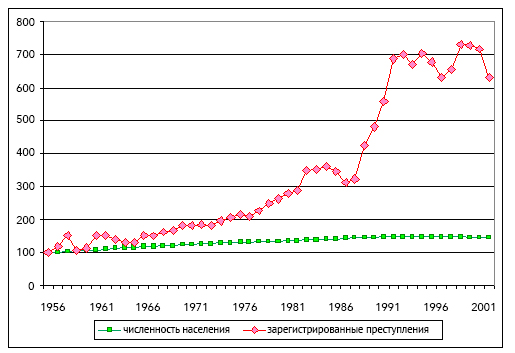
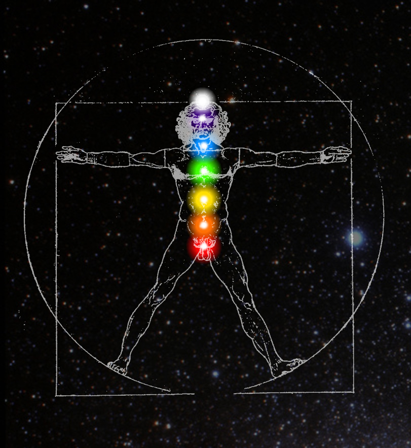
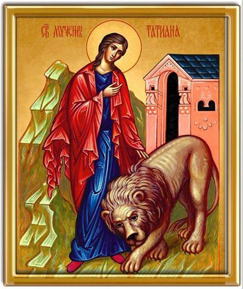

Давай вернемся к белорусам.
«Ясно вырисовываются регионы, где протестантские идеи достаточно востребованы: это столица, областные центры и крупнейшие города с прилегающими районами, имеющими прогрессивную структуру населения, а также исторически сложившиеся зоны протестантизма.» — Исторические предпосылки развития протестантизма в Беларуси. Щавель А. Н.
Как и в Европе в период Реформации протестантские идеи востребованы в первую очередь жителями городов. Впрочем, как и большинство других идей, которые появляются сперва в городских центрах и только через какое-то время доходят до периферии. Города — это ментальные тела стран, там преобладают индивидуалисты, веси — это астральные тела, в них над людьми довлеет чувство общности и взаимосвязности, все друг друга знают, а над теми, кто рискнет жить не как все, будут потешаться, а то и поколотить могут.
Протестантская идея «призвания» или того, что к твоему земному труду и рабочей специальности тебя Бог приставил и поэтому относиться к нему надо ответственно, плюс индивидуализм создают благоприятную атмосферу для всяческих начинаний. У человека, который посвящает себя своему делу, нет большого количества времени на то, чтобы судить других. «It is not my business.» Если такой тип людей преобладает в обществе, то проблема Tall Poppies и Crab Bucket не будет стоять так остро, как она стоит, например, в Австралии и Канаде среди аборигенного населения.
«Для тех, кто живет на дне, гравитационные силы настолько мощны, что практически останавливают какой-либо прогресс» — Individualism versus communalism
В статье рассказывается о зависти и «междусобной агрессии» по отношению к предприимчивым и инициативным, которая не дает людям вырваться из условий своей социальной среды. Такая же агрессия происходит и внутри отдельного человека, когда в нем имеется раскол между его стремлениями к лучшему и сопротивлением его собственного завистливого прошлого, которое говорит ему, что он не достоин, что у него не получится.
Древнее правое полушарие, которое проводит токи энергии астрального плана, можно сравнить с весями, а левое, которое управляет речевыми конструкциями — с городами, культурой и ментальным планом. Правое полушарие — проводит безымянную энергию (вспомни видео про женщину-невролога, пережившую инсульт), левое полушарие — проводит информацию, которая может давать этой энергии имя. Речь дана человеку свыше, для того, чтобы называть вещи своими именами, чтобы клеймить инстинктивные астральные поведенческие схемы, словить их словом, от которого они уже не отвяжутся.
Примитивные языки, бедные на слова, описывающие различные состояния ума и души, дадут такое же примитивное понимание астральных, подсознательных процессов правого полушария. То же самое относится к плохому владению языком, к недостатку образования и начитанности. Мы не можем контролировать те силы в себе, которые не понимаем, для которых у нас нет имени. Статистика из недавней статьи из канадской газеты говорит, что канадских женщин убивают чаще в сельских местностях и что чаще убивают женщин индейских. Скорее всего их же соплеменники.
«Уровень погибших на селе граждан в России за последние три года стабилен и более чем в два раза превышает аналогичный уровень, характеризующий городскую преступность, и почти в полтора раза превышает уровень числа лиц, которым причинен в городах тяжкий вред здоровью.» — Новые Известия.
Что в русских деревнях, что в африканских людоедских племенах души мутнеют под темной анимой, мрачная алчная сила накрывает людей с головой.
«Говоря языком науки, сознание клиента переводится из режима работы с доминированием левого аналитико‑логического полушария головного мозга в режим работы с доминированием правого полушария — интуитивно‑образного и эмоционального. По СК‑науке считается, что в основном правополушарными являются женщины. Они от природы более расположены к языку чувств, интуиции и образов, поэтому именно женщины и подростки легче поддаются цыганскому гипнозу, то есть легче с помощью „специалиста“ переходят с внешнего на внутреннее интроспективное мировосприятие. Это и приводит их к „затмению“ или просто бездумному поведению с суженным сознанием и с утерей трезвого контроля над происходящим.» — Константин Ратников, Георгий Рогозин. Картина мира в представлении спецслужб от мистики до осмысления.
Змей в райском саду соблазняет женщину. Цыганские, церковные, политические, массмедийные гипнотизеры соблазняют в людях женское, правое полушарие головного мозга. Форма очаровывает, «выброс внутренних наркотиков, хороших: канабиодиов, опиоидов и всего остального» мешает осознавать Функцию — цель и направление энергии.
Если верить Максу Веберу, то католики, жившие в его времена, были больше склонны оставаться в своем ремесле и быть мастерами-ремесленниками, как было в старину, когда человек получал профессиональное образование и вступал в гильдию ремесленников. Протестанты по его наблюдениям были карьеристами и переходили из ремесла на промышленное капиталистическое предприятие, где постепенно росли в должности или начинали свое собственное дело. (Заметь, как отцу больше подходит идея быть мастером своего дела, нежели карьеристом или бизнесменом.) Католики тяготели к традиционной формальной жизни, протестантов же тянуло к движению, к ветру перемен.
| Протестантизм | Католицизм |
|---|---|
| Мужское | Женское |
| Физики | Лирики |
| Функция | Форма |
«Но тот факт, что среди абитуриентов-католиков процент окончивших учебные заведения, которые готовят к технической и торгово-промышленной деятельности, вообще к буржуазному предпринимательству (реальные гимназии, реальные училища, гражданские училища повышенного типа. и т.п.), также значительно ниже, чем среди протестантов — католики явно предпочитают гуманитарную подготовку классических гимназий, — этот факт никак нельзя объяснить вышеназванной причиной; более того, он сам должен быть использован для объяснения незначительного участия католиков в капиталистическом предпринимательстве.» — Протестантская этика и Дух Капитализма. Макс Вебер
На гуманитарных специальностях учится больше девушек, там есть где разгуляться женскому камаманасу (ментальному телу, которое не свободно от искажающего влияния астрального, камического тела) и есть простор для теорий, оторванных от реальности, на технических и естественнонаучных специальностях такого простора уже нет, чем свободнее манас от камы, тем лучше он решает технические задачи. Преобладание энергетики мужского или женского типа в мужчине и женщине оказывает влияние даже на эмбриональное развитие. В исследовании Римского Института Статистики было обнаружено, что у родителей, окончивших технические специальности, больше рождается мальчиков. У тех, кто решил стать гуманитариями, рождаются в основном девочки. Известен также «феномен военных лет», когда в военные и послевоенные годы женщины рожают больше мальчиков, чем девочек. Стихия Огня пробуждается рядом со смертью. Женщины, которые имеют более доминантный характер, а значит более выраженную активность центра солнечного сплетения, в 5 раз чаще рожают мальчиков.
У меня пока нет ясной картины того, как соотносятся меры энергетики с полушариями. Пока что есть следующее понимание:
— Человек, поляризованный в астральном теле, теле чувств и желаний, будет воспринимать мир через правое полушарие.
— Человек ментальный, подавляющий свои неразрешенные чувства и не осознающий влияние своих желаний, будет воспринимать мир через левое полушарие. Его логика будет искажена нераспознанными эмоциями и желаниями. Таково состояние отца. Таково состояние очень многих мужчин, так как на их левое, воспринимающее речь полушарие, наложено заклятие социального кода — «Мужчина не должен быть эмоциональным.» Эту кодировку они снимают алкоголем, чтобы раскрепостить эмоции — мужчины подвержены алкоголизму в гораздо большей степени, чем женщины — затем им приходится ставить уже другую кодировку.
— У человека по-настоящему ментального будет улучшено взаимодействие между полушариями, он будет владеть своими эмоциями и желаниями, а не подавлять их, потому что внутри себя он способен называть вещи своими именами. Это самокритика без самоосуждения — то, что тебе необходимо, чтобы спокойно, без самосуда и линчевания, свойственного массовому сознанию, анализировать себя, нырять с фонарем бесстрастного, исследовательского, детективного научного ума под сознание, высвечивая темные потоки, тем самым их обессиливая. Нас могут контролировать только те инстинктивные силы, которые мы не понимаем, для которых у нас нет имени. Мы можем контролировать только те животные силы в себе, которые мы понимаем, для которых у нас есть имя. «И нарек человек имена всем скотам и птицам небесным и всем зверям полевым;...» — Бытие 2:20. Имена зверям давал Адам — мужская, ментальная часть человека. Когда астральное тело переходит под контроль тела ментального, то у человека появляется возможность мыслить образно в осознанном состоянии, а не в бессознательном, как это происходит во снах и бесконтрольных грезах, возникающих по воле какого-то корыстного желания или во время тревоги, когда человек постоянно накручивает в своей голове кинопленку триллера о своем неизбежно негативном будущем на проекторе в пустом кинозале. Все эти внутренние астральные образы запускаются одним механизмом — корыстью — желанием что-то приобрести, боязнью что-то потерять.
КАЛЬВИНИЗМ
Самая многочисленная канадская протестантская церковь «United Church» была сформирована из четырех протестантских деноминаций, две из которых — пресвитериане и конгрегационалисты, возникли из учения Жана Кальвина, который вместе с Мартином Лютером и Ульрихом Цвингли был одним из трех столпом Реформации. Именно кальвинизм стал самой распространенной протестантской деноминацией в Великом Княжестве Литовском.
Кальвинизм фаталистичен. Кальвин считал, что Бог заранее решил, кого отправить в рай, а кого в ад, от человека ничего не зависело, его посмертие было предопределено. Люди делились на проклятых и избранных и самой острой необходимостью для верующего было узнать, был ли он избранным. Кальвинисты решили, что трудолюбие, бережливость, достаток, при условии, что человек не растрачивает капитал на роскошь, а вкладывает в свое дело, могут быть признаками присутствия благодати, которая делает тебя избранным для спасения. Люди стали выискивать и подмечать в себе эти качества, а найдя, держались за них, как за спасительную нить. Так как они были критичны для выживания в мире ином, то фильтры ретикулярной системы настроились на их постоянное обнаружение, на поиск возможностей для их реализации. Энергия течет за мыслью. Чем больше мы обращаем внимание на какие-то качества в себе, будь-то позитивные или негативные, тем больше мы их усиливаем.
Под преимущественным влиянием кальвинизма развивались Швейцария, Шотландия, Голландия. В Голландии воспитывался Петр I. Интересно, что именно в Санкт-Петербурге у меня вдруг возникло желание пожить в Нью-Йорке — городе, который был заложен голландскими переселенцами. Теперь тебе уже нетрудно самой сравнить энергетику немца Штольца и русского Обломова.
«Главное зло здесь заключалось в том, что Петр привил русскому народу протестантизм, имевший в себе самом великий соблазн и привлекательность, в силу чего он стал жить в России и после Петра. Протестантизм привлекателен тем, что, по-видимому, возвышает человеческую личность, так как дает перевес его разуму и свободе над авторитетом веры и обольщает независимостью и прогрессивностью своих начал. <...> Но и этим не исчерпывается зло, которое причинил Петр России. Русская Церковь могла бы с успехом бороться с отступлением от православной веры русских людей на почве протестантизма посредством школьного просвещения. Но Петр отнял у Церкви имущество. В силу этого просвещение русского народа не было в ведении Церкви, распространялось не на исконных исторических началах нашей православной веры, но с XIX столетия даже внедряло отрицательное отношение к вере и потому в себе таило гибель России» — По мнению архиепископа Серафима (Соболева)
Как и большинство церковных учений, кальвинизм воспитывал людей кнутом ада (AD) и пряником рая (NA), польза его была в том, что он дисциплинировал людей, поднимал их ближе к ментальному плану. Жан Кальвин выступал за отделение церкви от государства, за право народа свергать правителя, в случае если он ведет себя не по-божески, за разделение полномочий власти на законодательную, исполнительную и судебную, чтобы власть не сосредотачивалась в руках одной группы людей — идеи, направленные против авторитарного самодурства, и повлиявшие в итоге на создание Декларации независимости США.
«Мы исходим из той самоочевидной истины, что все люди созданы равными и наделены их Творцом определенными неотчуждаемыми правами, к числу которых относятся жизнь, свобода и стремление к счастью. Для обеспечения этих прав людьми учреждаются правительства, черпающие свои законные полномочия из согласия управляемых.» — Декларация Независимости США.
У русского человека эти права отчуждены. Тем более чужды они русской женщине. Право на свободу от гнета и манипуляций неотъемлемо от права на жизнь. Солнечное сплетение (живот — жизнь на сербском), которое никем не угнетается и не манипулируется, дает человеку сангвинистическое чувство счастья. «Стремление к личному счастью» хоть и эгоистично, но все же более человечно, чем стремление к наслаждениями, в том числе к наслаждению обладать властью и манипулировать другими людьми, используя силу своего авторитета. Идеи, запустившие Реформацию и Идеи, повлекшие к составлению Декларации Независимости, несли в себе схожий пассионарный импульс. Реформация вела к религиозной самодостаточности и самоуправлению церкви, Декларация Независимости к гражданской самодостаточности и самоуправлению. Если перефразировать цитату Михаила Голденкова о белорусском протестантизме, то можно сказать, что власть только тогда можно назвать истинно народной, когда она сама пробивает себе дорогу, причем не сверху указами князей и королей, а снизу, через обычных крестьян и горожан. «Стремление к счастью» — это человеческое стремление вернуться в Эдемский Сад, к здоровому состоянию солнечного сплетения, где жили «солнечные дети, здоровье которых непоколебимо» — фраза из советской передачи про Неумывакина. Стремление вернуть назад Советский Союз, лучшие его проявления, отражает точно такое же человеческое стремление к счастью, только если в американской мечте речь шла о счастье отдельного индивидуума, то социализм, левая идеология, ориентируется на счастье всего общества. Здоровье солнечного сплетения нации зависит от того, насколько равномерно энергия финансов и возможностей распределена по ее телу.
«На место старого буржуазного общества с его классами и классовыми противоположностями приходит ассоциация, в которой свободное развитие каждого является условием свободного развития всех.» — Манифест Коммунистической партии. Карл Маркс и Фридрих Энгельс.
По аналогии, когда солнечное сплетение отдельного человека здорово, то его сознание (энергия) равномерно распределяется по туловищу, рукам и ногам, что улучшает контроль и телесно-пространственную ориентацию. Многие болезни не осознаются из-за проблем в солнечном сплетении. Из-за проблем в солнечном сплетении возникают многие болезни. В подобный замкнутый круг завинчивается капиталистическое индивидуалистическое общество. Из-за проблем в солнечном сплетении — жажда денег, власти и могущества искушает всех людей, которые доросли душой до солнечного сплетения, обретя энергетическое и ментальное превосходство над основной массой жителей — возникают болезни общества, неравенство возможностей, сокращение числа социальных лифтов, неравномерное распределение энергии денег и возможностей по телу нации. Когда энергия не достает до рук рабочего класса, то они становятся холодными. Себя бы согреть, до остального просто нет дела. В 1980-х при содействии Рейгана и Тетчер англосаксонский мир взял курс в сторону правой идеологии, поддерживающей крупный бизнес, где каждый сам за себя и «the winner takes it all» — закон джунглей.
Рейган ослабил налоги для большого бизнеса и смягчил антимонополистические законы для слияния компаний, которые могли теперь объединяться и захватывать все больше и больше рынка, а значит и больше власти над ценами. Здоровая конкуренция стала исчезать, а неравенство доходов — увеличиваться. Энергия финансов и возможностей стала утекать в руки тех, у кого эти возможности уже есть. Богатые стали еще богаче. Помимо создания социальной напряженности, при таком состоянии социума у людей, особенно у нижних слоев населения, будет утрачено доверие к будущему, перспективы растворятся, а, значит, терпеть до второй зефирки, насыщать энергией лобные доли, обуздывая свои примитивные желания уже нет смысла. Чтобы снять напряженность лимбическая система предложит человеку съесть первую зефирку, которая ему уже заботливо предоставлена — индустрия пустых развлечений, наркотики, алкоголь.
Идеи со временем теряют свой изначальный импульс и чистоту. Идея коммунизма была опошлена партийным руководством и самим советским народом, который выбрал жизнь комфорта и потребления во времена застоя. Идея, заложенная в Декларации Независимости США, стала опошлена руководством страны, которое взяло на себя миссию по навязыванию своей жизни, своей свободы и своего счастья другим странам мира. Утрата энергии происходит, потому что люди в массе не могут длительное время выдерживать позитивное напряжение изначально сильной и конструктивной идеи, they cannot take charge, не могут взять ответственность за реализацию идеала. Автомобили, квартиры, стенки и прочая ерунда берет их в свой плен.
Протестантизм на территории нынешней Беларуси был заглушен при помощи ордена иезуитов. Католическая Церковь сложа руки не сидела и запустила процесс под названием Контрреформация, одним из главных игроков этого процесса и стал вышеупомянутый орден. Они открывали школы и учебные заведения, учили людей грамоте и письму. Это тоже просвещение, только просвещение под контролем Ватикана.
Там где работает архетип «Ужасной матери», там ищи и сына-маньяка. Вот некоторые из наставлений для членов ордена:
«Делай то, что твоя совесть считает хорошим и приказывает делать; если вследствие непреодолимой ошибки ты считаешь, что Бог велит тебе лгать или кощунствовать, кощунствуй»
«Не делай того, о чем твоя совесть говорит, что это запрещено; не поклоняйся Богу, если ты непоколебимо веришь, что это запрещено Богом»
«Существует подразумеваемый закон... повинуйся непобедимым неправильным велениям совести. Как только ты уверился непоколебимо, что тебе ведено лгать, — лги»
«По велению Бога является законным убивать невинного человека, украсть или совершить... (Ex mandato Dei licet occidere innocentem, furari, fornicari); ибо он есть Господь жизни и смерти и всего сущего, и поэтому веление его должно быть выполнено». (Ex prima secundae, Quaest., 94).
«Человек, принадлежащий к религиозному ордену, который на краткое время отбрасывает свой обычный режим для греховной цели, — свободен от отвратительного греха и не подлежит наказанию отлучением от церкви» (III, 2, probl. 44, n. 212).
«Церковь — это наша мать. Она наша „Священная Мать Церковь“, которая возникла благодаря нашему крещению, она дает нам возможность расти в ее присутствии и имеет это знакомое материнское отношение, мягкости и доброты: Наша Мать Мария и Мать Церковь знают как заботиться о своих детях и показывать нежность. Мыслить о Церкви вне этого материнского чувства означает мыслить о негибком сообществе, сообществе без человеческого тепла, о сироте.» — Папа Франциск
Орден подчиняется Папе Римскому, как главе католической церкви, но дело в том, что нынешний папа — первый в истории иезуит, занявший святой престол, и по правилам ордена должен беспрекословно подчиняться его генералу, так называемому черному папе. Иезуитские миссии стали расползаться по всему миру, начиная с основания ордена в 16 веке. Они вернули в католицизм некоторые территории, попавшие под влияние Реформации, основали приходы и учебные заведения в Индии, Японии, Китае, Бразилии, Африканских странах. Сейчас в мире работают 380 иезуитских средних школ и 190 колледжей и университетов.
«Этот орден имеет секретные знаки и пароли, соответствующие той степени, к которой члены принадлежат, и так как они не носят особой одежды, то очень трудно опознать их, если только они сами не представят себя, как членов ордена, так как они могут казаться протестантами или католиками, демократами или аристократами, неверующими или набожными, в зависимости от той миссии, какая на них возложена. Их шпионы находятся везде, во всех слоях общества, и они могут казаться учеными и мудрыми, простаками и глупцами — как повелевают их инструкции.» — Иезуиты. Теопедия
Иезуиты подчиняются приказаниям вышестоящих по иерархии беспрекословно, их организация патриархальна до степени абсолюта. Иезуитами восхищался Гиммлер, считая их орден моделью, по которой нужно выстраивать СС. Пять директоров ЦРУ (CIA) получали образование в иезуитских учебных заведениях. CIA иногда расшифровывают как Catholic Intelligence Agency.
Некоторые представители Ватикана по-своему восприняли Фатимские явления Девы Марии трем португальским девочкам и ее просьбу о посвящении России своему непорочному сердцу — как разрушение атеистического коммунистического строя и переход России в католичество. В дальнейшем Ватикан принял живое участие в этом процессе. В 1982 году Рональд Рейган встречается с Иоанном Павлом Вторым. На встрече присутствовал Александр Хейг, глава госдепартамента США, тоже окончивший иезуитский Университет Джорджтауна. Договорились принять меры для того, чтобы покончить с «Империей Зла» — так американский президент назвал СССР. Недавний выход фильма «Звездные Войны» пришелся ему под руку. Ватикан совместно с ЦРУ начали финансово и идеологически поддерживать польское профсоюзное антикоммунистическое движение «Солидарность». В их планах было сменить власть в Польше, после чего коммунистические страны стали бы выходить из Варшавского Договора одна за другой. До этих событий директор ЦРУ Уильям Кейси, окончивший иезуитский университет Фордхэма, ведет переговоры с королевской семьей Саудовской Аравии. Ему нужно было убедить их: 1) начать поддерживать антикоммунистические силы в Афганистане 2) обрушить цены на нефть. Итогом этих действий стало то, что в 1989 Польша начала переход к капиталистической экономике, афганская война стабильно выкачивала большие суммы денег из СССР, к чему еще стоит добавить гонку вооружений, в которой СССР не мог не участвовать. К 1986 году Саудавская Аравия увеличила добычу нефти в 5 раз, отчего цена на нее упала в три раза. Это был существенный удар по экспортным доходам СССР, почти половину которых составляли доходы от продажи топлива и электричества. Это, конечно, лишь часть процессов, которые подкосили левую, социалистическую альтернативу правому рыночному обществу, в котором побеждает сильнейший, в котором социально-экономическое напряжение таково, что у человека нет чувства суверенитета в конфликтных ситуациях и не посещает его голову мысль, что если что — он сам справится. На настоящий момент 26 человек владеют тем же количеством денег, которым владеет 3.8 миллиарда бедных людей. Попытки свержения социалистического режима на Кубе проводились под эгидой ЦРУ, организации, основанной Биллом Донованом, рыцарем мальтийского ордена, еще одной ватиканской своры. Теперь они нацелились на социалистические Венесуэлу, Никарагуа и опять на Кубу.
Вот теперь и думай после всего вышесказанного, имеет ли отношение Игнасио де Лойола (1491 — 1556) — основатель ордена иезуитов, к твоему психологическому состоянию. Я думаю, что раньше ты бы ответила, что нет, а сейчас поймешь, что причинно-следственные цепочки можно протянуть от любого явления в мире и до тебя. Но Де Лойла — не причина, он тоже следствие каких-то процессов.
В период между 60-ми и 70-ми годами в мире случился какой-то перелом. Или скорее слом. Сразу по многим направлениям проявились тенденции отката к животному царству. В СССР начинает расти уровень преступности.

Усиливается дедовщина в армии. Одна из причин была в том, что В 1960 Политбюро приняло решение набирать в армию уголовников, которые принесли туда свою звериную иерархию и жесткие консервативные понятия. Другая причина — в армии было все меньше командиров-фронтовиков, которые понимали важность человечного отношения к нижестоящим по званию. Перед смертью все равны. Одна энергия, более чистая и здоровая, уходила из армии, вместо нее втекала другая — темная, животная и мутная. С 1960-го по 1991 через советскую армию по моим грубым расчетам прошло 60 млн. человек.
В СССР и во всем мире растет потребление алкоголя.
«...после Второй мировой, приблизительно с середины 50-х годов, когда были залечены основные раны, во всём мире, но особенно в Европе и Северной Америке, вместе с ростом материального достатка начался неудержимый рост потребления алкоголя. Благополучнейшая тогда Швеция за 30 лет — с 1946 по 1976 г. — увеличила потребление на 129 %» — Немцов А. В. Есть такая наука — алкология // «Природа», № 11, 1995 г.
Помнишь, как в арабских эмиратах нам рассказывали про арабов, которые тайком выпивают, потому что не знают, чем им заняться в своей жизни. У них все есть, кроме перспективы и видения будущего. Похожая ситуация стала складываться в застойные времена, когда быт людей улучшался, материальная жизнь налаживалась. Чем больше в жизни комфорта, тем меньше в душе огня. Есть такое выражение «Женщина — хранительница очага» и если описать его с энергетической точки зрения, то получается:
| Очаг | Хранительница очага |
|---|---|
| Огонь | Вода |
| Янь | Инь |
| Мужское | Женское |
Огонь всегда горит вверх. Вода всегда стекает вниз, к первой стихии — Земле, к материализму. Огненным все время не сидится и для тех, кому не сидится, в мире открываются различные школы лидеров, проводятся курсы по саморазвитию, печатаются миллионы книг на тему того, как себя менять. Внимание, которое сейчас уделяется развитию самодостаточной личности и ее ментальных способностей несоизмеримо по сравнению с тем, что было в прошлые века. Появилось новое отношение к воспитанию детей, когда акцент сместился с затылочных долей на лобные, вместо затрещин родители применяют здравый смысл. В реформации воспитательного процесса большую роль сыграл Бенджамин Спок. Будучи человеком либеральных взглядов, а не консервативных, он видел в ребенке индивидуальность, а не продолжателя родовых традиций. Спока можно ставить в один ряд с остальными, многочисленными пассионариями. В годы, когда для основной массы людей приемлемо было только жесткое патриархальное воспитание, без проявления чувств по отношению к ребенку, он открыл американцам глаза на то, что детей можно не бить. Когда он присоединился к движению Новые Левые, выступавшему за социализацию политики и экономики и стал активно выступать против военных действий во Вьетнаме, то консервативные, патриархальные люди стали его обвинять в том, что он создал в Америке целое «Spock generation» («Поколение Спока») — молодых людей, которые не желают слушаться старших и не внимают призыву своей родины воевать со вьетнамцами (patria — родина на итальянском). Им было неприятно, что больные наклонности их Идола ставятся под сомнения. Навет на Спока усилился во времена Рейгана, когда акцент сместился с либеральных ценностей личности, на ценности семейные и патриархальные.
Если сравнить мир с центральной нервной системой, то ускоряющаяся ментализация планетарного населения сопоставима с нарастанием взаимосвязей между нейронами в головном мозге человека.
Пробуждение умов неизбежно пробуждает индивидуальности. Обратное также верно. Когда Мирзакарим Норбеков говорит, что в его центре «создают» миллионеров, успешных людей, то подразумевается подъем энергетики души со второго родового центра до третьего, и смещение поляризации сознания с астрального эмоционального тела до тела ума или ментального. Ментальный уравновешенный человек сам решает, куда ему двигаться, какому желанию или стремлению ему следовать, а какие следует отбросить. Хочешь быть в массовке — запрягай в телегу рака и стой на месте, хочешь быть щукой — становись акулой бизнеса, стремишься найти лебедя — Птицу Правды — ищи. Своими книжками Норбеков обращается к тем обиженным и недовольным водовозам, в которых понемногу начал зажигаться огонь самосознания. Его работа — это работа по подъему масс до уровня личностей.
Цель моего письма показать тебе, что конфликт, который происходит в твоей жизни, в твоей внутренней жизни и во внешней семейной, не уникален, а всего лишь отражение в твоем частном микрокосме того, что происходит в макрокосме, на глобальном уровне. Одно из сотен миллионов отражений.
В мире происходит борьба двух сил:
— Консервативной, патриархальной, животной, цели которой — сопротивление переменам и желание, чтобы все было по-старому. Даже все то новое, что появляется в человеческой среде, она приспосабливает под алчные цели прошлого. Эта энергия тянет человеческое сознание к уже Известному.
— Прогрессивной человеческой, цели которой — перемены, ментальное развитие и пробуждение тяги к Новому и Неизвестному.
Люди, которые попадают под влияние второй силы, есть в каждой стране и в каждой церкви и даже в каждом ордене. Но общий ход мысли задает сама организация или страна, в которой многие честные и порядочные люди пытаются существовать, совершая как можно меньше компромиссов между своей совестью и уставом или установками.
Проблемы в личных, семейных и социальных отношениях создаются второй энергией, которая в славянской ведической религии называлась Род. Сила эта — по отношению к человеку внешняя, который не различая ее проявлений в себе, скатывается на животный уровень. Эта энергия коробит человеческие души, воспитывая их кнутом и пряником. Кнут и пряник находится в руках у чертей — информационных ячеек, которые человек наполняет важным для себя смыслом, будь-то «семья», «карьера», «родина», «бог», превращая в идолы что угодно. Для мозга эти ячейки — все равно что клетки физического тела и управляемый животной энергией он будет их либо защищать, когда почувствует угрозу (AD), либо наполнять человека чувством удовольствия (NA), когда условия внешнего мира благоприятствуют его пристрастиям. Информационная ячейка — это клетка для души, которая стремится расти, но которой черти начертили порог (limbus на латыни), за который ей нельзя ступать. Люди грызутся друг с другом по простой причине — они пока еще не люди. Их ждет болезненный и непростой процесс признания в себе зверя, что в популярной ныне психологии именуется освобождением от эгоизма. Имя этим чертям — легион.
«Почитай отца твоего и мать твою...» — Исход 20:12
У людей, чья личность здорова и адекватно интегрирована, у которых женское полушарие (Мать) и мужское полушарие (Отец) находятся в гармоничном взаимодействии, а это значит, что левое, аналитическое не подавляет эмоции правого, а правое не затмевает своими эмоциями и желаниями деятельность левого, будут создавать гармоничные супружеские отношения, где мужское и женское будут находиться в состоянии динамического равновесия, оказывая благоприятное воздействие на сына или дочь, который не будет психологически метаться, не зная, чью сторону ему занять в конфликте, ведь конфликтов не будет, а если и будут, то они будут восприниматься как средство выявления темных сторон сознания. Бенджамин Спок говорит о том же, когда призывает не подавлять своих теплых эмоций по отношению к ребенку, одновременно сопровождая это ясной и твердой дисциплиной — о равновесии женских и мужских энергий.
«Все родители наилучшим образом выполняют свою родительскую работу, когда в них есть естественная и непосредственная уверенность в себе.» — Спок.
У мужа твоего не было ни нормального отца, ни нормальной матери, обоих уволокла звериная энергия. Скотское в них проявлялось естественно, непосредственно и уверенно. Это происходит, когда лобные доли слабо контролируют лимбическую систему. Я помню разговоры о том, как в теле бабы Гали при вскрытии обнаружили, что с органами пищеварения все было совсем худо. Худо было с животом и с головой. Центр, который находится в середине лба, между бровей, который в Индии помечается точкой бинди, называется Аджна, что переводится как «Власть». Подразумевается, конечно, власть над самим собой.
«Когда у дементных больных затронута эта зона [лобные доли], у них словно отключается внутренний ограничитель, препятствовавший ранее выражению непристойностей и употреблению нецензурных слов.» — Головной мозг: структура и функции.
У тебя была похожая история, оба твоих родителя стали жертвами родовой силы, один умер от ее агрессивного аспекта, второй — от пассивного. Только от мужа тебя отличало сильное желание создать счастливую семью. Такое сильное, что оно затемняло твое ментальное зрение, когда за ширмой желаемого ты не видела действительного — что отец не будет меняться, что ситуация, когда жена берет всю эмоциональную и ментальную нагрузку, связанную с переездом, на себя, а муж еле шевелится, а то и вообще сопротивляется — болезненна и ее надо прекратить, остановиться и сказать: «Нет, дорогой, так не пойдет, или ты участвуешь наравне или мы никуда не едем.»
Ты чувствовала, что что-то не так, что это ненормально. Ты говорила неоднократно, что это неправильно, что ты одна все делаешь, но тебя никто не слышал, потому что кругом были одни эгоисты. Ты говорила, но ставить вопрос ребром не решалась. По простой, но вероятно малоознаваемой причине – это рано или поздно привело бы к разводу, а значит и к слому оси, вокруг которой, как на веретено, была намотана твоя личность, нить твой жизни — «Счастливая Семья». Отец бы сказал в таком случае: «Ну и славно, не едем, так не едем. Я только за. Будем дальше жить день за днем в нашей неизбывной серости, в которой не будет никакого будущего.» Такой расклад ты бы не смогла принять на уровне самого эфирного тела, это было бы тебе не по душе. Солнечное сплетение «не любит, когда грязно», в том числе когда грязно в психическом смысле. Развод был бы неминуем. Так как желание счастливой семейной жизни и переезда в Канаду владело твоим подсознанием сильнее, чем мысль о справедливых отношениях, то оно сделало мгновенные, неосознаваемые тобой расчеты насчет того, какая линия поведения приведет к исполнению твоего желания, а какая нет. А как ты думаешь, люди мигом умножают баснословные числа в уме или откуда у злонамеренных людей способность проявлять моментальную эгоистичную хитрость? Это делается силами подсознания и правого полушария, замкнутого на ментальный план в первом случае и на животный астральный во втором. Только тобой двигала не хитрость, а благое намерение, желание счастья для своего ближнего круга.
Отец таков из-за воспитания, только надо принять идею того, что человек воспитывается всю свою жизнь. Он или активно занимается самовоспитанием, что встречается не часто, или воспитывается своим окружением. А значит, отец таков, не только из-за родителей, но еще и потому, что вместо протеста ты когда-то дала в целом согласие на его в целом пассивное отношение и в общем-то была согласна с его тактикой разрешения конфликтов – "замять и забыть", не просить прощения после того, как он вел себя с тобой не по-человечески. Просить прощения для животной части сознания означает взять и сознательно понизить свой ранг в стаде. Это ненормально с позиции биологии. Значит, не просить прощения = послушно следовать закону джунглей. Я тоже виноват, потому что трусил и молчал, не реагируя на несправедливость, тоже слушаясь закон джунглей – старшему нельзя перечить. Это тоже потакание. Пассивность и агрессивность отца происходит от того, что он по-так-ает своей инстинктивной природе, на все ее предложения он отвечает: «пусть будет так». Правительство РФ так себя ведет, потому что значительная часть населения не протестует. Их молчание принимается за согласие. «Им и так нормально.» В то же время они считают, что для того, чтобы придти в движение, им нужен сильный лидер.
По-хорошему семья должна создаваться людьми, которые интегрированы в личность, у которых ум, эмоции и тело действуют как одно целое. Тогда они будут сотрудничать, а не созависеть. Вампирические энергии не будут циркулировать по семейному кругу и передаваться следующим поколениям, портя всем кровь. Вампирическая созависимость в семьях возникает от комплекса неполноценности, и передается дальше по цепочке детям, внукам.
Дети, которые рождаются в какой-либо семье, входят в неосознаваемый ими поток причинно-следственных связей — негативной кармы и в меру своих душевных сил стараются не повторять ошибки своих родителей. Доказательство этому простое – вы лучше своих родителей, гораздо лучше и жизни ваши чище.
Главная трудность человека в необузданном астральном теле, которое мутит кровь в человеке. Но когда человек занимается непрерывным самонаблюдением, самоанализом и самоизменением, то оно постепенно теряет свой контроль. Оно истончается и легчает от страданий — благотворного действия кармы, когда человек не получает того, что желает. В этом благотворность вашего переезда в Канаду, вы здесь с отцом полегчали, потому что все сложилось не так, как желалось. Солнечное сплетение приходит в порядок когда человек перестает употреблять слово «мой» по отношению к другим людям. И его собственный третий центр приходит в нормальное состояние и третий центр тех людей, которых он избавил от потоков страстей, желаний, благих намерений (известно куда ведущих), направленных в их адрес, какими бы нормальными они не были. Когда я говорю не употреблять слово «мой», то я имею в виду не речь, а внутреннее отношение, которое допускает, что кто-то может быть «твоим». Для семейных устоев это звучит дико. На то они и устои, чтобы люди в них стояли. Будь иначе, у нас было бы совсем другое общество, потому что были бы другие семьи. Тебе нужно самой взвесить для себя и решить, сколько правды в моих словах. Когда бытовое «я» (используя термин Ирины Хакамады) слышит в свой адрес «мой сын», «мой муж», «моя дочь», то для него это нормально и обыденно. Когда душа такое слышит, то будучи бесконечно честной и прямой, она не понимает как реагировать, для нее это означает, что она владеет чем то, что принадлежит другому, но не знает, что именно и как она должна отдать этому другому.
"Мама не люби меня так сильно, а то я умру." – из книги Николая Некрасова
И человек живет с постоянным неразрешенным конфликтом, уже забытым и замятым под маской нормальной обыденной жизни, серой повседневности. Так, бдительно храня очаг солнечного сплетения, материнская любовь и создает простую обычную жизнь большинства людей, где все всегда по-старому.
Астральное тело истончается и легчает по мере того, как человек, если только он решится, самостоятельно избавляет свою психику от этого притяжательного местоимения. Ни внутри, ни снаружи человека нет ничего по отношению к чему он мог бы употребить слово «мой» или «мое», включая его собственное сознание — все создано не им. Но это трудно признать умом, а если признал, то еще труднее этим жить. Именно астральное «мой», «моя», «мое» создает границы обособленной личности, да и те человек склонен нарушать или безвольно позволять другим ломиться через них.
Постепенное освобождение от привязанностей и желаний развеет астральные чары, не дающие человеку видеть себя, других и вещи вокруг такими, какие они есть. Перспектива отказа от эфемерных желаний и привязанностей звучит устрашающе, потому что для личности это равносильно смерти.
«Человек спит. Нужно ли ему умереть, прежде чем проснуться?»
Смерть, разочаровывая, помогает человеку отпустить пустое. «Пусть». И не цепляясь так сильно за плоть, он обретает смирение в эфирном теле, которое большинство людей из-за материализма, из-за астральной Воды, стекающей к физической Земле, просто не чувствует, не ощущает энергий, которые через него втекают, как и не ощущает эфирного единства всего живого. Физическая плоть разделена на обособленные друг от друга тела, которыми управляют частные капиталистические биоинтересы. Эфирная материя, хоть и разделена на тела, но эти тела сообщены друг с другом невидимыми токами и поэтому человек не может не влиять своим состоянием на свое окружение, на все планетарное целое.
1. Через эфир планеты и человека проходят 7 энергий, 7 мер
2. Они оказывают воздействие на 7 центров эфирного тела
3. На состояние эфирного тела откликаются 7 главных гормональных желез, расположенных в тех же местах, что и чакры
4. Смесь гормонов и нейромедиаторов определяет качество крови человека
5. Кровь воздействует на состояние головного мозга — Тайну за 7-ю печатями
6. Состояние мозга определяет качество внимания. Качество внимания влияет на то, на что человек и человечество в своей внешней и внутренней жизни это внимание направляет. По Закону Излучения и Притяжения. Если ты алчен, то будешь обращать внимание на одних конкурентов. Если ты бескорыстен, то будешь видеть соратников. "Мир – большое Зеркало."
7. Внимание человека творит действительность. Нынешнее качество планетарной действительности таково, потому что таково качество внимания человечества с преобладанием астральной энергии желаний и эмоциональных страстей.

Семь центров составляют ступени Лестницы Иакова, соединяющей подобно Радуге Небо и Землю. Душа растет, обретая новые силы, поднимаясь по этим ступеням, каждая из которых соответствует определенному плану сознания. Человеческая душа и душа человечества сейчас с трудом и болью проходит этап:
— Выхода из под влияния животного царства
— Обретения морального зрения
— Освобождения от астрального морока, от чар эмоций и желаний
— Уравновешивания сил в в солнечном сплетении
Что в результате дает интеграцию личности — соединение тела ума, тела эмоций и физического тела в одно целое. Integrity переводится с английского как цельность и как порядочность. Просыпающиеся от спячки умы обнаруживают себя на ментальном плане, на полях ноосферы (термин Владимира Вернадского), где они начинают озаряться новыми идеями, концепциями, изобретениями. Огонь ума разгоняет скорость времени и очищает Зрение: ментальное — люди яснее мыслят, моральное — людей озаряет немыслимой несколько веков назад идеей всеобщей социальной справедливости, физическое — люди обращают свое обновленное сознание на материальный мир и преобразовывают его технологиями, идеи которых стали им доступны благодаря выходу на ментальный план. Период с 1618 по 2012 год в календаре Майя обозначается как «трансформация материи». Это одно из свойств Огня — трансформировать, превращать одно в другое.
Вода стекает вниз к Земле, Огонь горит наверх – в направлении стихии Воздуха, которая растворяет границы и связывает все со всем. На круге Зодиака напротив огненного Льва стоит воздушный Водолей.
| Рыбы | Лев | Водолей |
|---|---|---|
| Сакральный центр | Солнечное сплетение | Сердечный центр (Сердце Льва) |
| План Эмоций | План Ума | План Разума |
| Стихия Воды | Стихия Огня | Стихия Воздуха |
Силы зодиакальных созвездий воздействуют на эфирные тела всех живых существ, минералов, растений, животных, людей и самой планеты. Мы живем в эпоху кризиса (krisis — на греческом поворотный момент), когда одна зодиакальная сила сменяет другую. Эра Водолея приходит на смену Эре Рыб. Ментальность и свободное мышление постепенно приходит на смену эмоциональной консервативности. Ты заметила, наверное, как животные последнее время, особенно домашние, удивляют людей своей необычной осознанностью: попугаи, делящиеся едой с собаками и лошади с раскрытым сердечным центром.
Идеи витают в Воздухе, озаряя умы тех людей, чьи души созвучны энергии Идеи. Не будь у Маркса симпатии к идее братства, не будь у него активен сердечный центр в какой-то мере, то его бы не озарило. Карл Маркс донес Идею до людей в меру своего несовершенства и в меру своего несовершенства люди попытались ее воплотить. Положительным эффектом борьбы марксизма с церковью стало освобождение людей от церковного мышления, от навязанного человеку чувства того, что он виноват и грешен просто по факту своего рождения. Человека заставляют испытывать врожденное чувство вины за проступки своих далеких предков подобно тому, как в патриархальных, созависимых семьях родственники алкоголика испытывают чувство вины за его проступки. Такое мышление очень дурно сказываются на третьем центре и лишает человека жизненных сил. Почему Николай Платошкин так нагло и бесцеремонно себя ведет с собеседниками? В хорошем смысле. Я думаю, что отчасти потому что он атеист, а значит в его подсознании нет ни встроенного чувства вины, ни страха божественного наказания за возможный проступок перед ненормальным Богом Ветхого Завета, который способен разгневаться на проступки своих отпрысков, несмотря на то, что его вневременной разум по идее предвидит будущее. В коммунистическом идеале вместо вины была личная ответственность, освобождающая людей от рабской покорности авторитетам и от комплекса виновной неполноценности.

В самом начале письма я говорил, что центры пробуждаются в зависимости от образа мыслей и действий. Католицизм и православие своими патриархальными методами держат человека под третьей мерой, протестантизм благоприятствует развитию индивидуализма в людях и способности отсрочивать вознаграждение. Посвящение своей частной жизни групповому благу без ожидания райской награды лично для себя, жизнь по коммунистическому принципу «один за всех и все одного» неизбежно ведет к пробуждению сердечного центра. Человек с запертым сердцем просто не сможет прочувствовать ни эфирное тело, ни эфирную материю — материю коммунизма, которая растворяет границы и связывает все со всем, в которой нет генетического материала, который надо защищать, нет близких, нет дальних, нет своих и нет чужих, лишь только братья и сестры.
Видение Нового и отпуск Старого происходит через кризис противостояния между свободной Водолейской энергией и энергией эры Рыб — консервативной, присваивающей, привязывающей и закрепощающей душу и сковывающей ум. За небольшую одержанную победу над Рыбами, над привязанностью к мужу, который отзывается в основном на гнетущие и обособляющие позывы старой эры, тебя наградили моментом эфирного раскрепощения, ты лежала утром в кровати и парила в эфирном теле, ощущая как границы тебя тают. У тебя получилось "отпустить" старое, что для личности равносильно смерти. Как у зрителя древнегреческой трагедии у тебя случился катарсис – очищение.
Чтобы так, пусть на короткое время попари́ть, тебе пришлось попа́риться подобно героям фильма «Настоящий Детектив», которые разыскивали злодея по имени Yellow King (Желтый Король — намек на солнечное сплетение и царя зверей). Воду выпаривает Огонь.
Вращаясь, небосвод запутал мне пути,
И тело мне назло клянется не дойти.
Кто знает: воспарить смогу, лишь испарившись?
Кто скажет, как еще свободу обрести?
— Омар Хайам
Ты как-то задавалась вопросом «Может это какая-то карма в нашей семье?» Это карма, которую нужно отработать. И переезд в Канаду тоже не результат лишь твоих личных усилий. Весной 2011 года мне в Питер позвонила молодая воодушевленная женщина с радостными новостями. Это была ты, но я не узнал тебя, потому что голос твой был другим, он был моложе. Той весной несколько моих друзей испытали на себе сильный приток душевных сил. Голос твой стал звонче и моложе, потому что раскрепостилось Горло (Стихия Эфира). Возможно так надо было, чтобы ты сюда приехала и прошла через этот конфликт (он еще не разрешен), поэтому тебе прибавили сил, чтобы ты смогла сдать тест на знание английского языка и попасть в Канаду.
Весной 1738 года проповедник Джон Уэсли почувствовал, что его сердце «по странному согрелось». С этого момента, как он говорил, он стал обращенным христианином. Пережитый опыт сформировал его взгляды. Уэсли выступал против учения Кальвина об избранности одних людей и проклятия других и верил, что не обязательно человеку ждать до смерти, что и в этой жизни сердце может открыться для любви. Ему суждено было сыграть одну из ведущих ролей в основании церкви методистов и в создании евангелического движения. Как и преждевременная попытка построить коммунизм, Великое Пробуждение не пробудило людские сердца в массовом порядке. На Западе, в отличие от Востока не была распространена Йога во всей ее полноте — (Асаны хатха-йоги — это лишь малая ее часть). Население ничего не знало о центрах, некому было сказать, что сердце начнет открываться только тогда, когда человек начнет бескорыстно что-то для других делать и это не зависит от его вероисповедания, что оно не откроется если о нем все время думать или фантазировать о том, как в нем поселяется Христос. Уэсли был оживлен, но понимания того, что есть эфирные тела и что каждое эфирное тело находится на разной стадии эволюции, у него не было. Все, что он мог, это использовать принцип: «У вас должно быть также как у меня.» Вероятно, он был искренним альтруистом, поэтому его сердце открылось. Скорее всего паства восприняла «новое рождение» как некое особое эмоциональное состояние, в котором они должны находиться, потому что деноминации, произошедшие от методизма, занимаются как раз тем, что вгоняют себя в различные эмоциональные состояния, раскачивая свои астральные тела на волнах зажигательных речей проповедника. Две такие деноминации «харизматы» и «пятидесятники» практикуют говорение на неизвестных языках, веря, что это признак присутствия Святого Духа. Анатолий Лиман рассказывал мне о таком своем опыте, когда последний раз я был в Караганде. Кому это говорение приносит пользу — мне трудно понять. Так, пощекотать религиозные нервы. Видно, как идея со временем теряет свой изначальный импульс, опошляется. Тем не менее то, что произошло с Джоном Уэсли было частью глобального воздействия на людские умы в религиозной сфере и смещало акцент с Ветхого Человека на Человека Нового.
| Ветхий Завет | Новый Завет, Евангелие |
|---|---|
| Иегова | Христос |
| Эра Рыб | Эра Водолея |
| Установки, Послушание | Любовь |
В отличие от католических храмов ты редко найдешь фигуру распятого Христа в протестантских церквях. Обыкновенно, там висит только крест без тела. Воздействуют ли символы на сознание прихожан, а значит на их эфирные тела? Конечно. Протестантский крест напоминает пастве о Воскресении, католический — о смерти, о вине, о том, что кто-то умер за наши грехи, взяв их на себя, тем самым избавив нас от личной за них ответственности, от необходимости отрабатывать карму. Можешь сама интуитивно прочувствовать, каким энергиям эти символы способствуют, а каким препятствуют.
В Cердце хранится Тайна Сфинкса. В первый раз я сделал опечатку и набрал «Таня» вместо "Тайна".

Сердце укрощает Льва самодостаточной личности благодаря Силе, которую оно через себя пропускает, усмиряя страсти и гордыню обособленного ума. На Руси ее называли "Матушка-Земля". Эво Моралес, президент Боливии, социалист, на собраниях ООН называет своих коллег «Братья и Сестры». Мать-Землю от человекоживотных он защищает законами, которые будут дисциплинировать хищнические инстинкты. Это верный шаг, ведь не каждый еще может начать Ее слышать. Сперва надо стать человеком.
Раскрытие Сердца приводит человечество и человека к откровению (Апокалипсис на греческом откровение, раскрытие) о том, кто он и каково его место в Мире, в Целом. Оно смиряет и исцеляет.
К этому мы приходим через Кризис, когда надо отпускать старое и отжившее, выходить из Воды на Воздух, что для личности равносильно смерти.